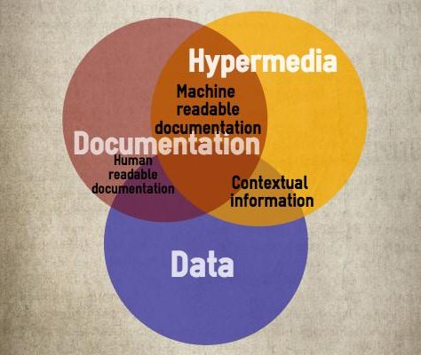

Documented and Tested Microservices For Fun And Profit
Oliver Trosien, ePages GmbH
WTF is a "REST endpoint"?
- Roy Fielding
Documenting REST APIs

apihandyman.io
How RESTful are you?

How RESTful do you
want to be?
Interface Description Languages
Media Types
HAL
{
"_links": {
"self": {
"href": "http://otrosien:8081/pizzas"
}
},
"_embedded": {
"pizzas": [
{
"name": "Pizza Salami",
"description": "The classic"
}
]
}
}
Spring-Data-REST
Spring WebMVC Spring-Data Spring-HATEOAS
- Repositories as resources with CRUD operations
- Supports HAL + ALPS + JSON Schema
- Ties your REST API to your data model
olivergierke/spring-restbucks
Follow your nose API
- Single well-known entry point
- Resources discoverable via link relations
Documentation style
- Focus on problem domain
- Focus on relations
- Be consistent
- Focus on URIs
- Repeating the obvious
Learnings
- IDL standards are still evolving
- Tool-support (usually) still poor
- Be correct, complete and current